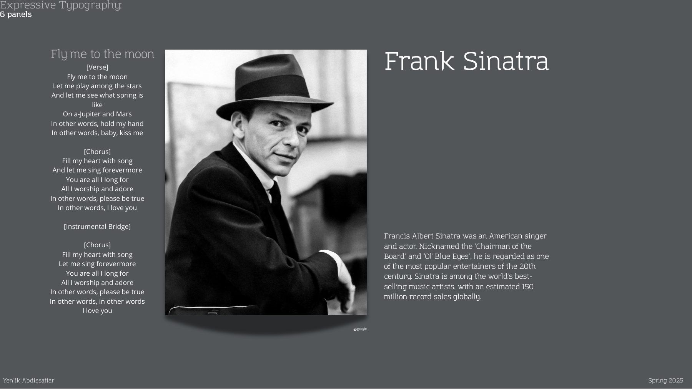
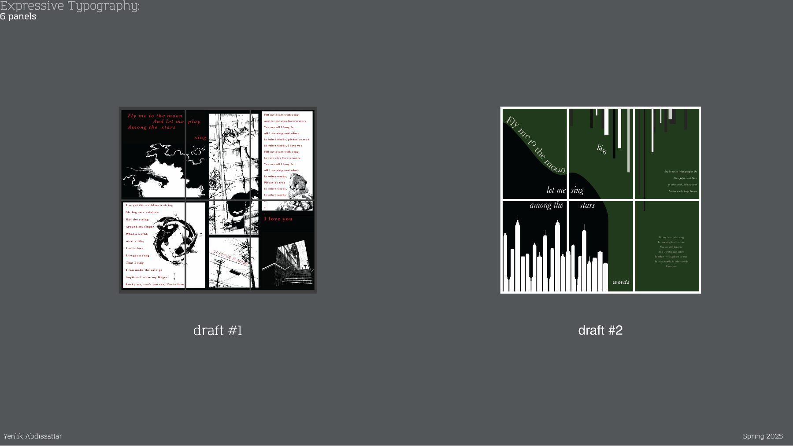
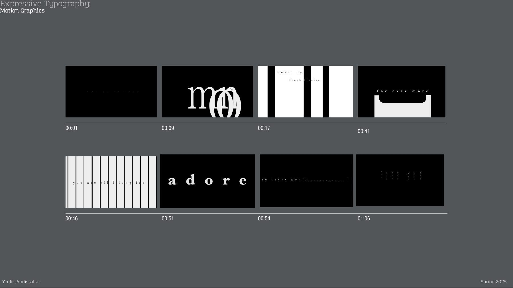
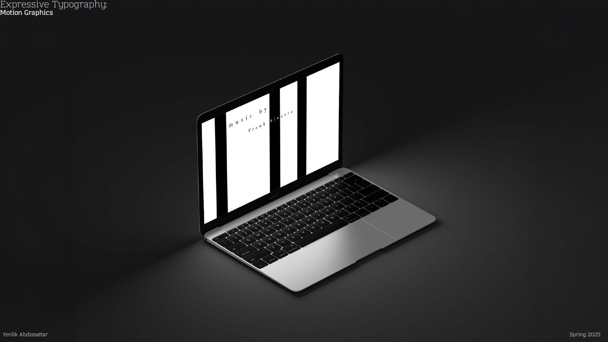
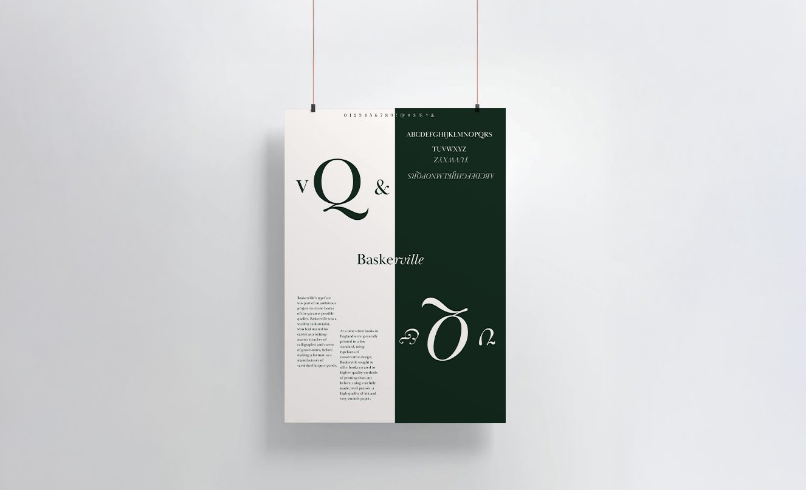

01
Research
The song and Frank Sinatra, gathered before any layout.

Six panels, then motion
Overview
Expressive typography built on the lyrics of “Fly Me to the Moon”: a six-panel structure turned into a time-based motion narrative.
Brief
Make type carry rhythm, tone and emotion, so it works as both visual and verbal expression.
Approach
Dynamic type placement, repetition and spatial contrast, with a limited palette and piano imagery to reinforce the musical theme. The panels were then animated in After Effects.
The song and Frank Sinatra, gathered before any layout.

Two drafts testing image, rhythm and density.

The final panels: type placement, repetition and a three-colour palette.

Frames from the timeline, from 00:01 to 01:06.



Next, 08
Baskerville